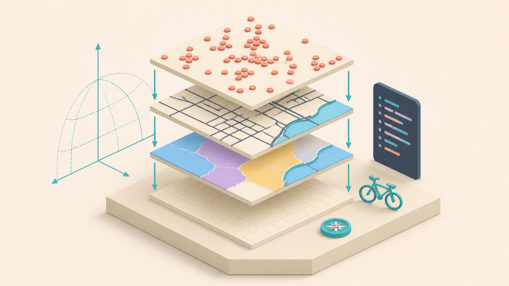
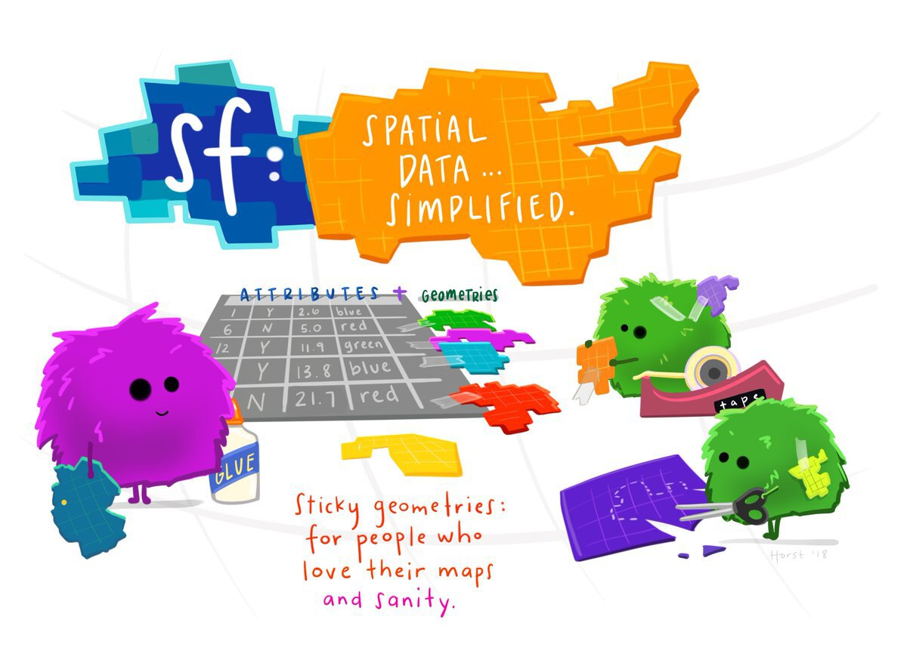
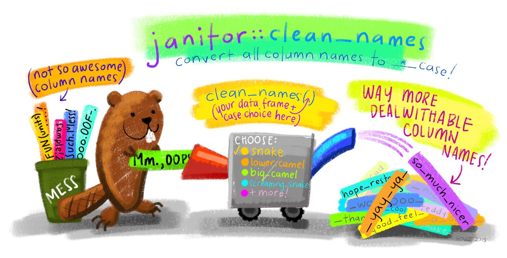
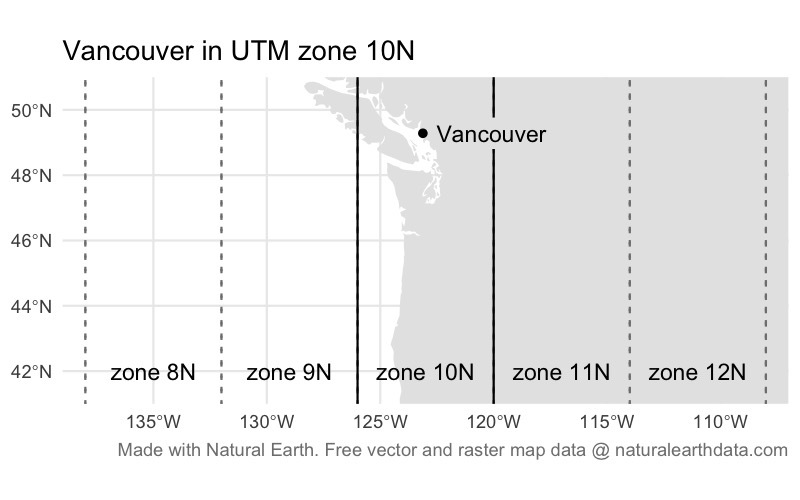
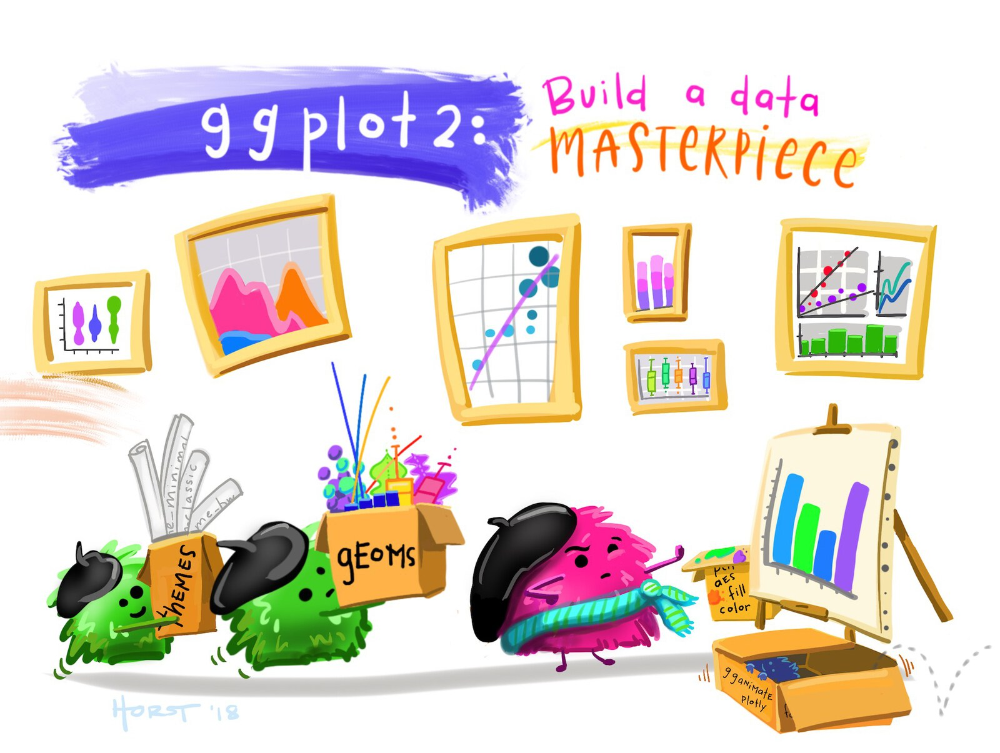
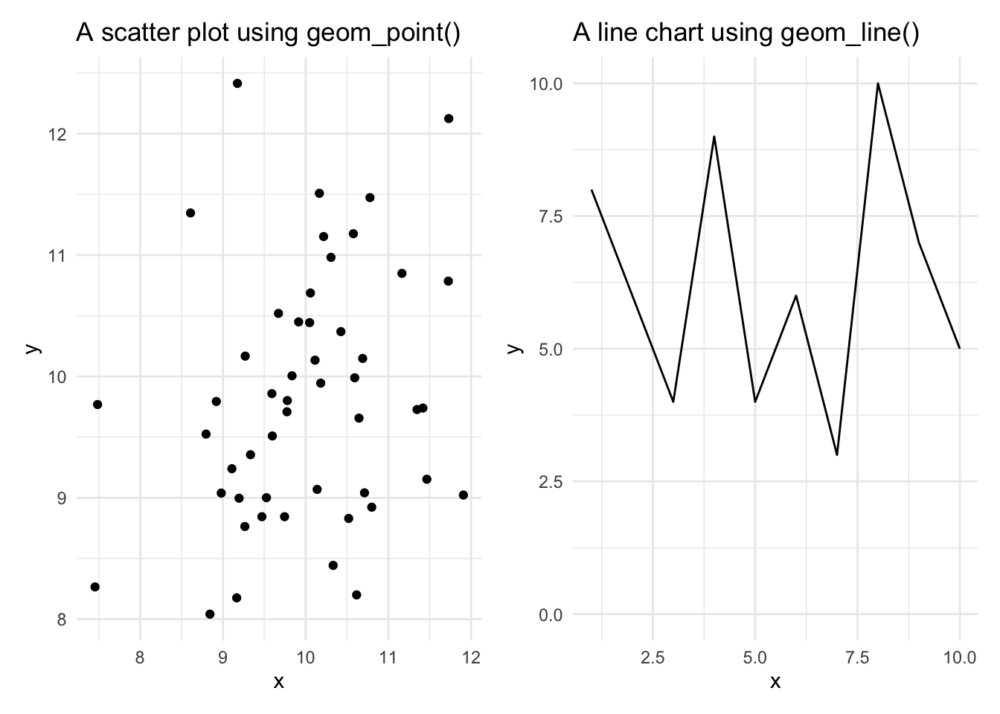
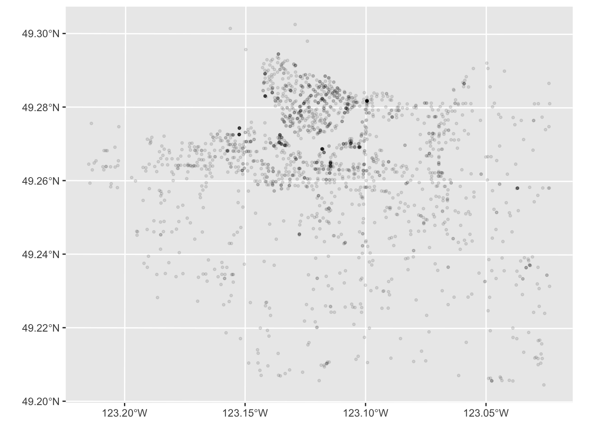

<httr2_response>
GET https://mpjashby.github.io/crimemappingdata/vancouver_thefts.csv.gz
Status: 200 OK
Content-Type: application/gzip
Body: On disk '/Users/mattashby/Documents/Crime Mapping Book/data/raw/vancouver_thefts.csv.gz' (422683 bytes)

In Chapter 2 you learned the basics of creating a crime map in R. In this chapter we will create a second crime map, this time focusing a bit more on the details. You will learn more about working with spatial data, including how to load data and convert it into a format suitable for mapping. By the end of this chapter you’ll be able to visualise crime data effectively, creating a clear and accurate map. Let’s dive into the process and start mapping!
crime-mapping. If not, click the File menu, then Open Folder … and choose the crime-mapping folder.In Chapter 2 we produced a simple map of a particular type of crime in a neighbourhood, but we skipped over a lot of the details of how to do it. In this chapter we will make another crime map, this time focusing more on each step in the process. We will then build on this in Chapter 6 to make a better crime map.
In this chapter we will make a map of bicycle thefts in Vancouver in 2020. By the end of the chapter, you will have produced this map:
<httr2_response>
GET https://mpjashby.github.io/crimemappingdata/vancouver_thefts.csv.gz
Status: 200 OK
Content-Type: application/gzip
Body: On disk '/Users/mattashby/Documents/Crime Mapping Book/data/raw/vancouver_thefts.csv.gz' (422683 bytes)
This isn’t a finished map, because it’s missing some of the vital elements that we’ll learn about in Chapter 6. But this map is a useful step on your journey towards being an experienced crime mapper.
By the end of this chapter, you will have learned how to:
The process we will use to produce the map has four main stages:
Download
from the internet
Load
from a file into an R object
Wrangle
into the correct format for mapping
Visualise
map based on wrangled data
Every file should have a name that helps you understand what it contains and find it again later. Good file names are easy for computers to handle, easy for people to understand and, where files have a meaningful order, sort into that order.
File names should generally follow the same conventions as object names in R: make names descriptive and use snake_case.
Choose names that describe the contents or purpose of the file. vancouver_thefts.csv is more useful than data_file.csv.
If several scripts must run in a particular order, begin each name with a padded number:
The leading zero keeps the files in the correct order if the sequence grows beyond nine files.
Which file name best follows these conventions?
Maps are visual representations of spatial data. Spatial data is special because each row in the data is associated with some geographic feature such as a building, a street or the boundary of a neighbourhood. This adds some quirks that we have to understand to work with spatial data successfully.
Maps are made up of multiple layers of spatial data that are styled to represent features of interest and then stacked on top of one another to make the finished map. Watch this video to learn more about spatial layers and the different types of data that we can use in maps.
Which of the following best describes the three ways computers store spatial features?
What is the purpose of a base map in mapping?
What happens when too much detail is included on a map?
What is a raster layer?
Why is it common to store data about different types of features in separate files?
Points, lines and polygons in spatial data are known as geometric objects or simply geometries. Spatial data is data that has a geometric object (e.g. a pair of co-ordinates representing a crime location) associated with each row.
With any spatial data, we need a way of describing where on the earth a particular point (such as the location of a crime or the corner of a building) is located. Watch this video to find out about the different co-ordinate systems we can use to do this.
What are co-ordinates used for?
What is the geographic co-ordinate system based on?
Why are degrees of latitude and longitude difficult to use for everyday measurements?
What can happen if you use a co-ordinate system designed for a different part of the globe?
What is a practical way to find out which co-ordinate system a dataset uses if it’s not embedded in the file?


There are several packages that handle raster map data from different sources – one of them is the ggspatial package that we have already used to load the base map of Atlanta for the homicide map we made in Chapter 2. One of the most important spatial packages is the sf package, which we use to handle spatial vector data. SF stands for ‘simple features’, which is a standard for storing spatial data. SF objects are data frames that have a special column to hold the geometry (point, line or polygon) associated with each row in the data. SF objects also understand what co-ordinate system the geometry are described in. This means SF objects can be transformed between co-ordinate systems and combined together in layers on a map.
There are lots of functions in the sf package for handling spatial data. Almost all of these functions begin with the letters st_ (e.g. st_read()), which makes it easy to identify that those functions are designed to be used on SF objects.
st_
The names of almost all functions in the sf package start with the letters st_, not the letters sf_.
To get started, create a new R script file to hold the permanent code for this analysis. Give the file the name chapter_05.R and save it in the same directory as the R script files we created in previous chapters. You can remind yourself how to do that by looking back to Section 2.2.
Now add the code needed to load the packages we will use for this map, then run that line of code. You can remind yourself how to load packages and run code in Positron by looking back to Section 2.3.1.
The special features of spatial data – needing to store geometries, details of the projection used etc. – mean that spatial data is often stored in special file formats. There are lots of spatial-data formats, but fortunately almost all of them can be read by the st_read() function. This means we do not need to learn a different function for each spatial-data format.
While datasets with line or polygon geometries must almost always be stored in specific spatial-data formats, point data can also be stored in common data formats such as Excel and CSV files. The data for this chapter is provided by the Vancouver Police Department in a CSV file (gzipped to reduce the file size).
As in Section 2.3.2, we will use R to download the file into the data/raw folder before we read it. This makes the analysis more reproducible: the script records where the data came from, and the local copy remains available if the website is temporarily unavailable later.
Thinking back to what we learned in Section 2.3.2, add code to chapter_05.R that downloads the dataset to data/raw/vancouver_thefts.csv.gz, then loads the local file and stores the data in an object called thefts. If you need help, you can click the ‘Solution’ button below.
We can use request() and req_perform() from the httr2 package to download the file, then use read_csv() from the readr package to load the local copy. The assignment operator <- stores the loaded data in the object thefts.
.gz at the end of the file name mean?
CSV files can hold very large amounts of data, but at the cost of the size of the file becoming very large. We can reduce the size of a CSV file (or most other types of file) by compressing the file. You may be familiar with .zip compressed files. Gzip is another way of compressing files. Gzipped files have the file extension .gz. read_csv() can automatically decompress gzipped files, so we can treat a gzipped CSV file just the same as an uncompressed CSV file.
Now that you have stored the data in the thefts object, what code is needed to view the first few rows of data? Type the code into the R Console (not the script file – see Section 2.2) and run it. Click the ‘Solution’ button to check your code.
The Vancouver thefts dataset consists of 21,918 rows, each representing one theft. Before we can map this data, we will need to do some minor data wrangling to get it into the format we want.
In the previous section, we downloaded the Vancouver theft data and then loaded the local file from data/raw. To load any file stored on our computer, R needs a file path that specifies where the file is stored.
You might have encountered file paths before, but you may not. A typical file path looks like this on a Mac or Linux computer:
or like this on Windows:
The important thing to note here is that computers store files such as vancouver_thefts.csv in folders (also called directories), which are themselves often stored inside larger folders, etc. A file path tells a computer where to find a particular file. The file paths above can be read as telling the computer to open the Users directory, then the john_smith directory, then the Documents directory, then the crime-mapping directory (which you created in Section 1.5), and finally the file vancouver_thefts.csv.
The two file paths shown above are called absolute file paths, because they show the full location of a particular file on the computer. Absolute file paths on Windows start with X:\ (where X is a letter representing which disk drive the file is on) and with / on Mac and Linux. But there are two problems with absolute paths: they can be very long so they clutter up your code, and (more importantly) they are only correct for a specific computer. If you write an R script that includes either of the file paths above, then you give that file for me to run, the code will immediately produce an error because there is no directory /Users/john_smith on my computer.
Including absolute file paths in your code drastically increases the chances of errors when you or someone else tries to run the code on a different computer, or when you try to re-run the code later when the locations of files on your computer have changed. Always use relative file paths instead.
We can deal with that problem in a few ways. Fortunately, it’s quite simple to do as long as we always remember to:
here() function from the here package to specify the location of files as relative paths, where ‘relative’ means relative to the project folder.When you open the crime-mapping workspace in Positron, R knows to interpret relative file paths as being relative to the workspace folder. You can confirm the current working directory by running the function getwd() in the R Console (the ‘WD’ in getwd() means ‘working directory’).
We can construct a file path in two ways using the here() function. The first, which we’ve been using up to now, is to specify each nested folder or file as a separate argument to the here() function. For example, to open the file vancouver_thefts.csv in the raw folder that is itself inside the data folder, we would use:
Alternatively, we can specify the file path as a single string, with each folder separated by a forward slash (/). For example:
You’ll notice that when you run this code in the R Console, R prints the full file path to the file on your computer. That means you can pass the result of the here() function to any function that needs a file path, and R will know where to find the file. We have already done this in the code that loads the Vancouver thefts dataset, where we used here("data", "raw", "vancouver_thefts.csv.gz") as the file path to the local copy of the data.
Since both ways of using the here() function give the same result, you can choose to use either.

Typos are one of the most frequent causes of errors in any coding language. As we learned in Section 3.2.2, column names should use snake case: lower-case letters with words separated by underscores (_). This makes code easier to read and means you do not have to remember whether a column was called crime_count, crimecount, CrimeCount or CRIMECOUNT.

At the moment, the column names in the thefts dataset are upper-case letters. Rather than having to remember this, we can easily convert them to snake case using the clean_names() function from the janitor package.
To use a function from a package, we usually first load the package using the pacman::p_load() function at the very start of a script. In this case, we probably won’t want to use any other functions from the janitor package, so instead of loading the whole package we will use this one function directly. To do this, we write the function name with the package name added to the front, separated by two colons ::.
# A tibble: 21,918 × 10
type year month day hour minute hundred_block neighbourhood x
<chr> <dbl> <dbl> <dbl> <dbl> <dbl> <chr> <chr> <dbl>
1 Other Theft 2020 1 1 0 0 11XX BURNABY… West End 4.90e5
2 Other Theft 2020 1 1 0 0 13XX W 71ST … Marpole 4.90e5
3 Other Theft 2020 1 1 0 1 18XX E GEORG… Grandview-Wo… 4.95e5
4 Other Theft 2020 1 1 0 0 2X ALEXANDER… Central Busi… 4.92e5
5 Theft from… 2020 1 1 0 0 11XX SKEENA … Hastings-Sun… 4.98e5
6 Theft from… 2020 1 1 0 10 14XX LABURNU… Kitsilano 4.89e5
7 Theft from… 2020 1 1 0 30 14XX W 11TH … Fairview 4.90e5
8 Theft from… 2020 1 1 0 0 33XX OAK ST South Cambie 4.91e5
9 Theft from… 2020 1 1 0 30 42XX SKEENA … Renfrew-Coll… 4.98e5
10 Theft from… 2020 1 1 0 0 45XX CLANCY … Riley Park 4.92e5
# ℹ 21,908 more rows
# ℹ 1 more variable: y <dbl>Since we always want the column names to be snake case, there’s no need for us to create a version of the data that holds the column names before we’ve cleaned them. Instead, we can use the pipe operator to add janitor::clean_names() to the code that we have already written to load the data from the CSV file. This means that the data will be loaded and the column names cleaned in one step, and we can store the result in the thefts object.
chapter_05.R
snake_case.
Add the code above to the chapter_05.R file and run that line of code. If you now run head(thefts) in the R Console, you will see that the data has stayed the same but all the column names are now in snake case. clean_names() would also have replaced any spaces with underscores, tried to separate words in the variable names and cleaned up several other potential problems. For this reason it is common to call janitor::clean_names() straight away after loading a dataset so that you can be confident that the column names will be in the format you expect.
If we wanted to use the clean_names() function again, we would have to include the package name and :: each time, so if our code was going to make repeated use of the function then it would probably be easier to load the package using the pacman::p_load() function as we have done in previous chapters.
At present, the data in the thefts object is just a regular tibble. We could not use it to make a map because R does not know which columns represent the geometry, or what co-ordinate system the locations are recorded in. We can deal with this by converting the data to an SF object using the st_as_sf() function from the sf package.
The data provided by the Vancouver Police use the UTM zone 10N co-ordinate system. UTM is a system for assigning co-ordinates to any location on earth relative to a designated local reference point for the UTM zone covering that part of the planet. The ‘N’ at the end of the zone name 10N refers to the northern hemisphere.
In almost all cases, co-ordinate reference systems only work for the part of the world that they were designed for. So we should not use the UTM zone 10N co-ordinate system to map data outside the area for which it was designed (broadly speaking, the west coast of North America from Los Angeles to Vancouver, and the part of Canada directly north of Vancouver extending most of the way to the north pole). If we were to use the UTM zone 10N co-ordinate system for data from another part of the world, we would be very likely to get error messages or strange results.

We can convert the thefts tibble to an SF object using the st_as_sf() function (remember, all functions in the sf package start with st_, which can sometimes make the function names a little confusing). We specify which columns in the data represent the geometry (in this case, the x and y columns), and what co-ordinate system the data uses.
Co-ordinate systems can be specified in lots of ways (some very complicated), but the easiest is to specify the EPSG code for the relevant system. An EPSG code is a unique reference number for a particular co-ordinate system that R can look up in a database to get the information needed to display the data on a map. The EPSG code for the UTM zone 10N is EPSG:32610.
We only need the version of the thefts data that is a spatial dataset, so we can again add the code needed to convert the thefts tibble to an SF object to the pipeline we have already created. This means that the data will be loaded, cleaned and converted to an SF object in one step, and we can store the result in the thefts object.
Change the existing code in chapter_05.R so that it includes the st_as_sf() function in the pipeline, and run that line of code.
chapter_05.R
snake_case.
Rows: 21918 Columns: 10
── Column specification ────────────────────────────────────────────────────────
Delimiter: ","
chr (3): TYPE, HUNDRED_BLOCK, NEIGHBOURHOOD
dbl (7): YEAR, MONTH, DAY, HOUR, MINUTE, X, Y
ℹ Use `spec()` to retrieve the full column specification for this data.
ℹ Specify the column types or set `show_col_types = FALSE` to quiet this message.If you look at the contents of the thefts object by running head(thefts) in the R Console, you’ll see that there is a new column called geometry. This column contains the co-ordinates of each bike theft. But crucially, it stores those co-ordinates in a format that R recognises represent specific locations on the surface of the earth, which means the co-ordinates can be used to make maps.
st_as_sf()
It is important to remember that we should only use st_as_sf() to convert a non-spatial dataset (such as a tibble) into a spatial dataset (an SF object). If we use st_as_sf() on an object that is already an SF object, this can have unexpected results and lead to errors in your code.
The easy way to think about this is that if you have loaded a dataset with read_sf() or st_read() then you have already created an SF object, so you don’t need st_as_sf(). If you have loaded a dataset with any other function that reads data (such as read_csv() or read_excel()) then you will need to use st_as_sf() if you want to plot the data on a map. Most importantly, do not use st_as_sf() if you loaded a dataset with read_sf() or st_read().
If you look through the contents of the thefts object by running head(thefts) in the R Console, you will see that not all of the rows relate to bicycle thefts. The type column shows that the dataset also includes thefts from vehicles, for example. To choose only those rows containing bicycle thefts, which function from the dplyr package would we use? If you need help, you can think back to Chapter 3 or have a look at the Data transformation with dplyr cheat sheet.
Which function from the dplyr package should we use to remove all the rows from our dataset except those for bicycle thefts?
Add code to the chapter_05.R file to create a new object called bike_thefts that contains only the rows in the thefts object that relate to bicycle theft. If you get stuck, you can hit the ‘Hint’ button below to get help, but try to find the answer on your own first! Once you’ve finished the code, click the ‘Solution’ button to check your code.
Use the filter() function to choose particular rows in a dataset. The syntax for filter() is filter(dataset, column_name == "value"). Replace dataset with the name of the SF object we created above, column_name with the name of the column containing the offence type and value with the offence type for bicycle theft.
Our data is now ready for us to make our crime map!
What is special about an SF object?
Which function converts the tibble into an SF object?
What does the crs argument in st_as_sf() do?
The script in this chapter now performs several tasks in sequence: it loads packages, downloads and reads data, cleans column names, converts the data to a spatial format and selects bicycle thefts. Comments and blank lines make those stages easier to recognise.
Add a comment at the top of a script to explain its overall purpose. Comments begin with # followed by a space and should normally use standard capitalisation and punctuation.
Use a short comment above each distinct task to explain why that block exists. You don’t necessarily need to annotate every single line of code if what that line does it obvious, but if you prefer to add a comment above every line to help yourself understand what the code does, that’s fine.
Leave a blank line between separate tasks, but do not add blank lines within a pipeline or a ggplot2 stack. The result is code that is visually grouped in the same way as the analytical process.
For a longer script, a comment ending with at least four hyphens creates a section heading:
Positron recognises these headings, allows the sections to be folded and treats them as boundaries between code cells. They make it easier to move through and run a long script one stage at a time.
Which is the best comment to place above code that loads a dataset?
Now that we have our data, we can use it to create a map of bicycle theft in Vancouver. Before we start, let’s take another look at our dataset so that we know which columns contain which data.
Simple feature collection with 6 features and 8 fields
Geometry type: POINT
Dimension: XY
Bounding box: xmin: 488371.3 ymin: 5452696 xmax: 494295.1 ymax: 5458232
Projected CRS: WGS 84 / UTM zone 10N
# A tibble: 6 × 9
type year month day hour minute hundred_block neighbourhood
<chr> <dbl> <dbl> <dbl> <dbl> <dbl> <chr> <chr>
1 Theft of Bicycle 2020 1 1 0 0 12XX VENABLES ST Strathcona
2 Theft of Bicycle 2020 1 1 0 0 20XX MAPLE ST Kitsilano
3 Theft of Bicycle 2020 1 1 13 0 7XX PACIFIC BLVD Central Busi…
4 Theft of Bicycle 2020 1 1 20 0 53XX VINE ST Arbutus Ridge
5 Theft of Bicycle 2020 1 3 11 55 65XX ANGUS DR Kerrisdale
6 Theft of Bicycle 2020 1 3 14 0 4XX E 10TH AVE Mount Pleasa…
# ℹ 1 more variable: geometry <POINT [m]>

A map is a specialised type of chart, so we can make maps using the ggplot2 package that is widely used to create other types of chart in R. ggplot2 charts are made up of layers, so they’re well suited to making maps.
The most-basic crime map that we can make simply plots the locations of crimes with no context. However, this almost never makes a good crime map because if there are more than a few crimes it becomes hard to see patterns in the data. But we can use a basic dot map as the foundation on which we can build a better map later on.
ggplot2 plots work by building up a chart using different functions, each of which adds or modifies some part of the chart. Building a plot starts with calling the ggplot() function, with each subsequent function being added to the plot definition using the + operator. Note that while the package is called ggplot2, the function in that package used to create plots is called ggplot(), not ggplot2().
The most-important of the ggplot2 functions are those beginning with geom_, which add graphical elements to the chart. If you want to add a layer to your chart showing a scatter plot, you use the geom_point() function, while if you want to make a line chart you use geom_line().

There are lots of geom_ functions available for representing data on charts in different ways. For maps, we can use the geom_sf() function that is designed to add spatial data (in the form of an SF object such as our bike_thefts data) to a chart, making it into a map. So to simply plot the points in our bicycle-theft data, we can use the code:
geom_sf() only works with SF objects
geom_sf() only works on SF objects, which is why we needed to convert the original tibble of data to an SF object using st_as_sf(). If you try to use geom_sf() on a dataset that is not stored as an SF object, R will produce an error.
By convention, each function that we add to ggplot() to change the appearance of our map goes on a new line (this makes the code easier to read) and all but the first line is indented by two spaces. Positron does this indenting automatically if the previous line ends with a + symbol, since Positron then understands that there is more code to come on the next line.
The map above shows the bike-theft data, but it is obviously not a very useful map. Fortunately, we can use the features of the ggplot2 package to build on this basic map.
Unless we want to produce a map of only a very small number of crimes (like the Atlanta downtown homicides map we produced in Chapter 2), it is unlikely that a point map will be very useful.
In fact, if you find yourself making a map with each crime represented by a separate point, you should probably stop and ask yourself if that is really the best way to achieve your goal – it will almost always be better to map the data in another way.
We are only creating a dot map in this chapter because it is a simple way to introduce the ggplot2 package and the basic principles of making maps in R. In Chapter 6 we will learn how to make more useful maps that show the density of crime rather than just the locations of individual crimes.
We can change the appearance of the points by specifying various arguments to the geom_sf() function. These arguments are called aesthetics, because they control the aesthetic appearance of the geometric objects (points, lines etc.) that are produced by a geom_ function. There are lots of aesthetics, but some of the most common are:
colour controls the colour of points and lines (for polygons, it controls the colour of the border around the polygon edge) – you can also use the spelling color for this argument and get an identical result,fill controls the colour used to fill polygons or points that use a shape capable of having different colours in the centre and around the edge (fill has no meaning for lines),shape controls the shape (circle, triangle, square etc.) of points (it has no meaning for lines or polygons),size controls the size of points and text,linewidth controls the width of lines, including the borders around the edges of polygons, andalpha controls the transparency of a layer (alpha = 1 equals fully opaque, alpha = 0 means fully transparent).colour and fill can be specified using any one of 657 R colour names or using a hexadecimal (‘hex’) colour code. Values of size don’t relate to any common unit of size (e.g. millimetres or points), so it’s easiest to set the size of points and text by trial and error.
There are 25 built-in shapes for points in R (shape 16 is the default):

We use aesthetics such as colour, fill, etc. to change the appearance of layers on a map by adding the aesthetic as an argument to the geom_*() function that creates the relevant layer. For example, we could change the points on our map to be red squares rather than the default black circles using this code:
As we have said, this basic map is not very useful. We can see that there seems to be a cluster of bike thefts towards the top (north) of the map, but it is difficult to see how important this cluster is because so many of the points overlap. Overlapping points are a particular problem in maps, because if there are multiple crimes at the same location then the points representing those crimes will be exactly on top of one another and it will be impossible to see whether there is one crime at a particular location or 100.
One way to deal with this problem is to make the points semi-transparent so that overlapping points appear darker. This often works better if we also make the points slightly smaller at the same time. We can use the alpha and size aesthetics to make the points smaller (relative to the default for points of size = 1) and semi-transparent.
Add this code to your script file:
chapter_05.R

Making the points semi-transparent goes some way to making it easier to see where bike theft is most common in Vancouver, but the pattern is not clear and it is not possible to tell which darker points represent a handful of crimes at the same location and which represent hundreds of crimes at the same location.
To make our map truly useful, we need to use a different technique. In chapter Chapter 6 we will learn how to identify crime patterns by mapping the density of crime.
Which function adds an SF object as a layer on a ggplot2 map?
What is the effect of setting alpha to a value below 1?
Why should we be cautious about using a dot map for a large crime dataset?
Save chapter_05.R by pressing . Then start a new R session by clicking the Restart R (⟳) button in Positron’s Console panel. This creates a blank canvas for the next chapter.
In this chapter we have learned more about some of the specific steps in the process of creating a basic crime map. Concepts such as co-ordinate reference systems and EPSG codes can be hard to understand at first, but you will get used to them as you use them to make more maps, so that by the end of this book you will be confident applying those ideas in a wide range of contexts.
You can now:
ggplot() and geom_sf().At the moment, your script file should look like this.
chapter_05.R
# This script produces a map of bicycle thefts in Vancouver in 2020.
# Load packages
pacman::p_load(here, httr2, sf, tidyverse)
# Download the raw data
request(
"https://mpjashby.github.io/crimemappingdata/vancouver_thefts.csv.gz"
) |>
req_perform(path = here("data", "raw", "vancouver_thefts.csv.gz"))
# Load and wrangle bike theft data
thefts <- here("data", "raw", "vancouver_thefts.csv.gz") |>
read_csv() |>
janitor::clean_names() |>
st_as_sf(coords = c("x", "y"), crs = "EPSG:32610")
bike_thefts <- filter(thefts, type == "Theft of Bicycle")
# Create a basic crime map
ggplot() +
geom_sf(data = bike_thefts, size = 0.75, alpha = 0.1)At the moment, it isn’t very easy to see patterns on this map, since so many of the points overlap. In Chapter 6, we will learn how to make this map much better by converting it into a density map.
Remember: whenever you create a dot map, ask yourself if a density map would be more useful.
You can find out more about some of the things we have covered in this chapter using these resources:
ggplot2 package in the Data Visualisation chapter of R for Data Science by Hadley Wickham, Mine Çetinkaya-Rundel and Garrett Grolemund.Answer these questions to check you have understood the main points covered in this chapter. Write between 50 and 100 words to answer each question.
|> in R) when working with multiple functions? Provide an example from the chapter.st_as_sf() need to convert a non-spatial dataset into an SF object, and why is each part needed?